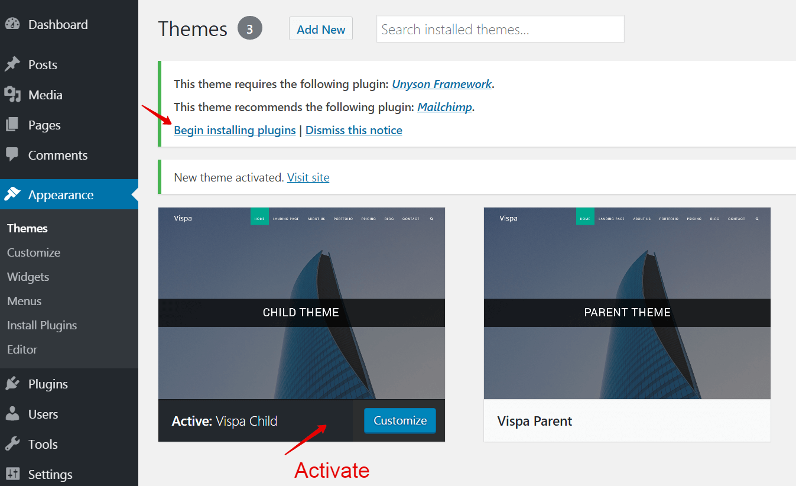
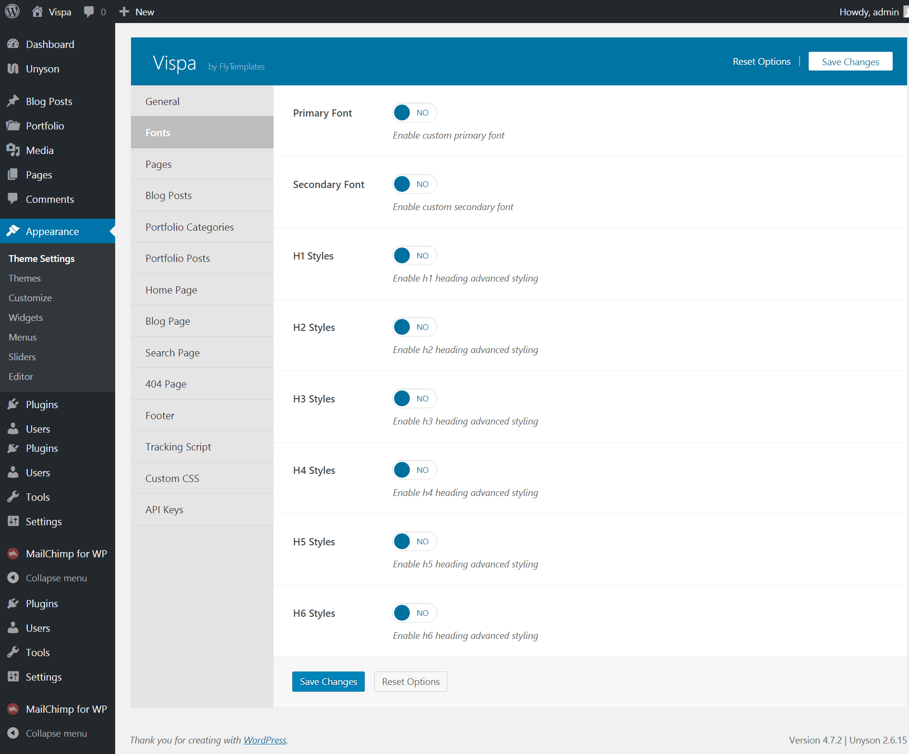

Thank you for purchasing our theme. If you have any questions about the template, please
feel free to contact us via
support@flytemplates.com or the
contact form. Thanks very much!
This documentation presents information how to install and use this theme. You can always find the
latest version of this documentation
online.
About the theme
Vispa can be used as a Portfolio, Blog WordPress theme or for any other usage.
Feel free to create your own website with this finished template.
Containing more than ten different layouts. Vispa WordPress theme can be used for multi-purpose
websites.
Whether you want to create an portfolio, a blog website, a gallery or even a personal profile page,
Vispa is always the right solution.
Use Theme Options and Shortcodes to customize your
website.
The user friendly WordPress interface will help and guide you through to build a fully working and
clean website.
Vispa has a clean and minimalistic design which helps you to create an awesome and powerful project.
The whole template was built based on the latest standards and recommendations. Vispa theme is
powered by
Unyson (WordPress framework) and
Twitter Bootstrap v3 (the most popular
front-end framework).
It means that it will be easier for you to do the changes and to increase its possibilities, thanks
to many plugins it possesses.
Requirements
If you're planning to build a website using WordPress with vispa theme, you must first
ensure your hosting provider
meets WP's and our theme requirements.
Database
MySQL version 5.5 or greater
PHP
PHP version 5.6.0 or greater
(available from August 2014)
PHP5 GD library
Memory limit set up at least 64MB
Enabled mod_rewrite in Apache for clean URLs (friendly URL)
Please make sure that you are using the latest version of WordPress
before you install vispa theme. You can find the information on how to install WordPress in WordPress Support (Codex).
Upload theme files
You have two ways to upload Vispa theme files:
Upload theme by WordPress upload function
Login to your WordPress admin account
(http://yourdomain.com/wp-admin).
Click Appearance›Themes and go to
Add New.
Click Upload Theme, browse your files and find vispa-child.zip and
vispa-parent.zip (make sure you are not uploading the whole .zip
file that you've downloaded from Themeforest).
Click Install Now.
After Vispa theme is uploaded, click Activate vispa-child.
Upload Vispa files to your server via FTP
Unpack the theme .zip file (vispa.zip) you have downloaded.
Upload the /vispa-child and /vispa-parent folder (not: "vispa Files") to
the /wp-content/themes/ directory in your WordPress installation on your
server.
Login to your WordPress admin account
(http://yourdomain.com/wp-admin).
Click Appearance›Themes.
Look for the vispa-child theme and click Activate.
Theme activation
After theme activation you must follow next steps.
Download and activate the required plugins

Download Unyson framework's extensions
If something goes wrong, go to Unyson page and install them
Import Content
It is possible to import Vispa demo content to your WordPress website based on Vispa WP
Theme.
Demo Content
If you want to use our content you have to go to Tools›Demo Content
Install page
Theme Options
After the theme is installed, a new menu page called
Appearance›Theme Settings will appear on
the bottom left of your WordPress administration area.
The Theme Options Panel is divided into several sections:

Menu Top
Main menu (Top Menu) is located in in the header area at the top of website.
It is a group of navigation links for your visitors to find the important parts of your site faster.
Menu is responsive and in mobile devices becomes right slide menu.
If you did not set "navigation menu" after theme activation
you can set it in Appearance›Menus. Here you can
also make a new menu or edit an existing item.
If you want to create new Primary Menu, you have to click "create a new menu" in top bar.
After that you have to write new "menu name" and click Create Menu.
After that you can add Pages, Categories and/or Posts to Menu structure, and you
have to check "Primary Navigation" and click Save menu. Now Top Menu is ready and you can
see it on front side.
If you want to create an item in menu that is not a link you can add "Links" with URL "#"
and your custom name. You can add this Link to the menu and make it a parent for some regular Pages.
Thanks to this your link will be in the main menu and after clicking it, the user can see
"sub-pages" of it.
Parent Page can be also regular Page, but then "sub-pages" in menu will be visible after cursor
hover.
To sum up, if you want to create drop-down menu after clicking event you need to use parent as Link
with "#" URL and if you want to create drop-down menu after hovering event you have to make menu
only out of regular elements (Pages, Posts, Projects etc.).
Not a link parent element to drop-down sub-menu, step #1Not a link parent element to drop-down sub-menu, step #2Not a link parent element to drop-down sub-menu - result
Pages
In WordPress, you can write Posts or Pages. Pages are static. They are a good way to
publish information that does not change much, like an "About us" page. Pages live outside
of the normal blog chronology. Pages are not associated with a date/time like Posts, nor can you tag
or categorize a page.
You can use Pages to organize and manage any content. In addition to the frequently used "About
us" and "Contact us" pages, you can add other examples of common pages including "Copyright",
"Disclosure", "Legal Information", "Reprint Permissions", "Company
Information", and "Accessibility Statement".
The theme comes with the following Page templates:
Default Template
Regular template with sidebars
(Appearance›Widgets).
Visual Builder Template
Full Width Page Template for theme visual builder.
The seo settings after page content can be edited in Unyson page , Seo Extension, its compatible with
this theme but not
required.
Home Page
Settings›Reading›Front page
displays›Front Page.
Portfolio
Portfolio post type is usually used to present your works and projects.
Portfolio Posts consist of many elements. It has a gallery upload option which give you the
possibility to
upload many images for your project.
Projects Posts 2 ColumnsProjects Posts 3 ColumnsProjects Posts No Spaces
Usage
If you want to add a Project Post to Project Category you have to go to:
Portfolio›Add New.
Blog
Posts are entries on your Blog that are shown in a reverse chronological order on the
front page of your Blog. While using our theme, thanks to WordPress Posts, you can create a typical
Blog or news about your company.
If you do not know how to write a Post look for additional information on one of many websites which
will help you with it, for example WordPress
Codex.
Shortcode
A shortcode is a WordPress-specific code that allows you to get an attractive elements
with almost no effort. Shortcodes can embed files or create objects easily instead of using a
complicated code.
Adding Shortcodes
Each shortcode are similar in use an they can be added very easy by clicking on them or dragging them
in the content. The difference between them
are the options provided. Each shortcode have different options with deatailed desription
Usage
If you want to add a shortcode element you have to:
Sliders
Go to Appearance›Sliders›Add
New.
Create Slider
In Vispa theme we have a custom slider extension where you can create as many sliders as you want.
Vispa comes with two diferent sliders.
Use Slider
After creating a slider you can go in one of your pages, posts or general settings and use
it as a header type option.
Widgets
It is a specific content that you can add to the sidebars on your website.
In our theme you can add widgets to the right, left sidebars and to the footer.
They can be easily added, rearranged and removed by dragging it to the chosen place in
Appearance›Widgets.
Sidebars
In our theme you can easily add as many sidebars as you want for any page.
How to Add a Sidebar to a Page or Blog Post
Novice
Novice tutorials require no prior
knowledge of any specific web programming language.
This theme comes with a special built in sidebar module that will let you add different
sidebars to different pages. Follow these steps in order to add a new sidebar to a page or
blog post:
Go to Appearance > Widgets and find the sidebar manager on the lower
right hand side of the page.
Lets add a new sidebar to a specific blog post. In order to do that, select the For
Specific Pages tab.
Select Blog Post from the list and type to search the blog post you
want to set a new sidebar for. You can add multiple posts if you want.
Select the position of your sidebar.
Create a new sidebar (or select an existing one from the list).
Press the Add Sidebar button in order to create your new sidebar.
Add widgets in your newly created sidebar.
By clicking on the widget you want from the left hand side
By dragging & dropping the widget in the sidebar placeholder
Done. No need to save, this page automatically saves it self as you go
along.
Custom Widgets
In Vispa theme we prepared the style of the default WordPress widgets and we added our custom
widgets:
Search
Widget lets you display a search box in sidebar.
Recent Posts
Widget lets you display your recent posts with thumbnails in sidebar.
Recent - Popular Posts
Widget lets you display your recent and popular posts with thumbnails and as tabs in
sidebar.
Login Form
Widget lets you login from frontend.
Contact Forms
Vispa use Contact Form Extension from Unyson.
Add a contact form to any page by adding the Contact Form Shortcode via de
Visual Page Builder.
Adding the contact form shortcode to apage
Go to Pages > All Pages
Create a new page or click on an existing page that is already created
Click on the Contact Form shortcode in order to use this for the Contact
Form 7 shortcode
Creating the contact form
-In order to create a contact form, you can use the contact form builder from Unyson plugin that is used in our theme.
Or you can use Contact Form 7 Plugin. CF7 Documentation - Docs
Frontend Result:
Styling
Vispa comes with unlimited color schemes, and the possibilitty to change theme
fonts(Appearence›Theme Settings›Styling
Tab)